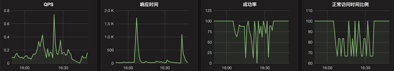

meerkat进行服务监控和服务降级
meerkat 是用于服务监控以及服务降级基础组件，主要为了解决调用外部接口的时候进行成功率，响应时间，QPS指标的监控，同时在成功率下降到预设的阈值以下的时候自动切断外部接口的调用，外部接口成功率恢复后自动恢复请求。本文将对使用方式以及进阶特性进行介绍。
项目主页： https://github.com/ChanningBJ…
为什么要进行监控和熔断
在我们的Java服务中，经常会调用外部的一些接口进行数据的获取操作，当这些外部接口的成功率比较低的时候会直接影响到服务本身的成功率，因此我们添加了对外部接口调用的成功率和响应时间监控，这样可以在造成大量用户影响之前预先发现并解决问题。同时，对于接口中的非关键数据，我们采取了更具成功率判断进行触发熔断的方式，当成功率下降到预定的阀值以下的时候自动停止对这个外部接口的访问以便保证关键数据能够正常提供，当成功率恢复以后自动恢复请求。
meerkat主要功能
监控：监控Java内部操作的成功率以及响应时间指标
上报：log文件和Grafhite两种监控指标上报方式，支持扩展其他的上报方式
熔断：（可选功能）成功率下降到预设的阈值以下触发熔断保护，暂定对外部接口的访问，成功率恢复以后自动恢复访问
基本使用
|
|
定义受监控的操作
假设我们的服务中需要从HTTP接口查询一个节目的播放次数，为了防止这个HTTP接口大量超时影响我们自身服务的质量，可以定义一个查询Command：
配置监控上报
在服务初始化的时候需要对监控上报进行设置。下面的例子中开启了监控数据向日志文件的打印
查看统计结果
统计结果会以熔断命令类名为进行分组。例如前面我们定义的 GetPlayCountCommand 类,package name 是 com.test，那么在日志中的输出将会是这个样子：
|
|
单独使用监控功能
如果不想使用熔断功能，只是想监控Java方法调用的耗时和成功率，可以直接使用 OperationMeter 进行实现，只需要在函数调用的前后添加开始和结束的调用即可：
开启熔断并配置阀值和持续时间
首先创建一个接口，继承自FusingConfig，用于指定配置文件的加载路径，同时还可以设定配置文件的刷新时间，具体定义方法请参照 ++owner++ 文档
创建查询Command的时候在构造函数中传入
配置文件内容如下：
| 监控项 | 含义 | 默认值 |
|---|---|---|
| fusing.[CommandClassName].mode | 熔断模式：FORCE_NORMAL－关闭熔断功能;AUTO_FUSING－自动进入熔断模式;FORCE_NORMAL－强制进行熔断 | FORCE_NORMAL |
| fusing.[CommandClassName].duration | 触发一次熔断以后持续的时间，支持ms,sec,min 单位。例如 10sec | 50sec |
| fusing.[CommandClassName].success_rate_threshold | 触发熔断的成功率阀值，降低到这个成功率以下将触发熔断，例如0.9表示成功率90% | 0.9 |
配置文件中的 CommandClassName 是每个操作类的名称，可以为每个操作单独设置上述参数。同时，这个配置文件支持动态加载，乐意通过修改fusing.[CommandClassName].mode 手工触发或者关闭熔断。
监控指标上报Graphite
我们的服务中使用的是Metric+Graphite+Gafana进行监控数据的采集存储和展现，下面将介绍如何配置监控数据上报Grafana，关于Graphite+Grafana的配置，可以参考文章：使用graphite和grafana进行应用程序监控
定义配置文件
首先定义一个接口，继承自GraphiteReporterConfig，通过这个接口定义配置文件的加载路径。配置文件路径的定义方法请参照 ++owner++ 文档, 下面是一个例子：
配置文件中需要定义下列内容：
| 配置项 | 含义 |
|---|---|
| meter.reporter.enabled.hosts | 开启监控上报的服务器列表 |
| meter.reporter.perfix | 上报使用的前缀 |
| meter.reporter.carbon.host | grafana(carbon-cache) 的 IP 地址，用于存储监控数据 |
| meter.reporter.carbon.port | grafana(carbon-cache) 的端口 |
下面这个例子是在192.168.0.0.1和192.168.0.0.2两台服务器上开启监控数据上报，上报监控指标的前缀是
由于相同机房的不同服务器对外部接口的访问情况一般比较类似，所以仅选取部分机器上报，也是为了节省资源。仅选择部分机器上报不影响熔断效果。
初始化配置上报
在服务初始化的时候需要对监控上报进行设置。下面的例子中开启了监控数据向日志文件的打印，同时通过MyConfig指定的配置文件加载Graphite配置信息。
查看统计结果
统计结果会以熔断命令类名为进行分组。例如前面我们定义的 GetPlayCountCommand 类,package name 是 com.test，那么在日志中的输出将会是这个样子：
| 监控项 | 含义 |
|---|---|
| [classname].success-rate | 成功率 |
| [classname].time.m1 | QPS |
| [classname].time.mean | 平均响应时间 |
| [classname].normal-rate | 过去1分钟内处于正常访问（非熔断）的时间比例 |
在Grafanna中可以看到下面的监控图：

自定义监控上报
meerkat使用++Metrics++进行监控数据的统计，因此可以使用Metrics支持的所有reporter进行上报。添加一种上报的时候，只需要实现 EnablingReporter 并在 MeterCenter 初始化之前进行调用即可。下面是log reporter的实现，可以作为参考
MeterCenter 初始化的时候开启reporter
多实例监控
多实例监控主要是为了解决一个被监控操作的实现类需要根据输入参数的不同分别进行监控和熔断的情况，通过定义实例的名称进行实现。例如获取视频播放次数的例子，获取视频播放次数的接口对于不同的视频类型而言请求逻辑是一样的，所以使用同一个类进行实现；但是对于不同的视频类型，接口实现的复杂程度不同导致成功率不同，当用户上传的视频的播次接口大量失败的时候我们不希望同时熔断电影电视剧这类视频的播放次数获取，这时就需要使用多实例这种特性进行监控和熔断。
下面是一个单实例的实现：
假设业务上我们可以根据视频ID判断视频类型，可以在类初始化的时候根据类型创建多种监控实例，添加了多实例支持的实现如下：
由于每个实例独享一个监控指标，日志中的监控个结果是这个样子：
|
|
相应的，对熔断阀值以及持续时间的配置也需要明确指出实例的名字：
|
|
参考资料
https://segmentfault.com/a/1190000009730789
有问题可以联系博主，博客主页有邮箱，微博，文章底部有微信公众号等联系方式。
转载请注明出处，谢谢！